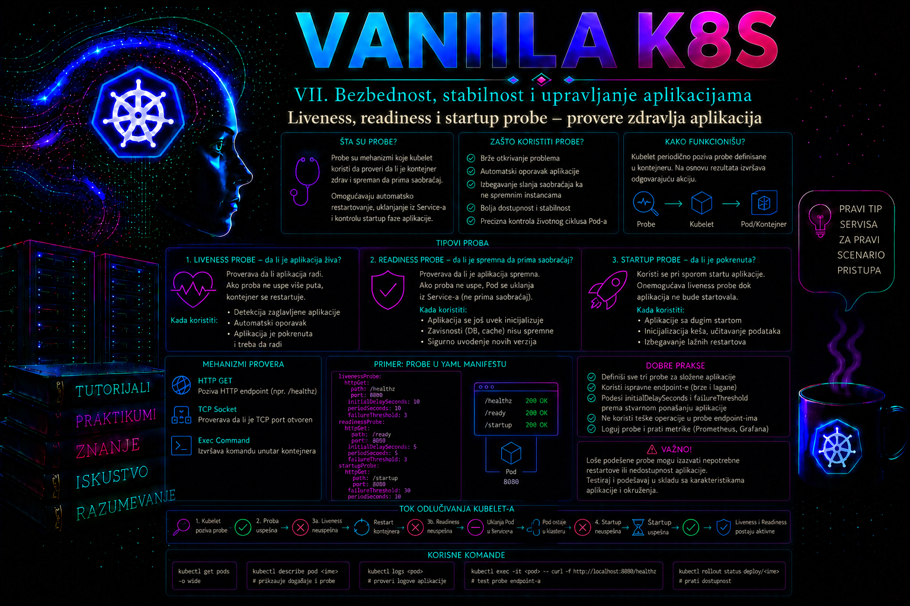

Vanilla Kubernetes

Kubernetes može da utvrdi da li je proces kontejnera pokrenut, ali samo postojanje procesa ne znači da je aplikacija funkcionalna. Proces može da radi dok su njegove radne niti blokirane, interni red zahteva zagušen, keš neinicijalizovan ili HTTP server nesposoban da odgovori. Obrnuto, aplikacija može da bude potpuno ispravna, ali joj je za inicijalizaciju potrebno nekoliko minuta. Probe omogućavaju kubelet-u da razlikuje ova stanja i da na njih reaguje na predvidiv način.
Liveness, readiness i startup probe nisu tri varijante iste kontrole. One odgovaraju na tri različita operativna pitanja: da li kontejner treba restartovati, da li Pod trenutno sme da prima saobraćaj i da li je aplikacija završila početno pokretanje. Pouzdana konfiguracija zato ne počinje izborom URL putanje, već definisanjem preciznog ugovora između aplikacije i Kubernetes platforme.
Uloga proba u životnom ciklusu kontejnera
Probe periodično izvršava kubelet na worker čvoru na kome se Pod nalazi. Kontrola se, zavisno od konfiguracije, obavlja HTTP ili HTTPS zahtevom, pokušajem uspostavljanja TCP veze, pozivanjem standardnog gRPC health interfejsa ili izvršavanjem komande unutar kontejnera. Rezultat pojedinačne provere može biti uspeh, neuspeh ili nepoznato stanje. Kubelet zatim primenjuje pravila definisana parametrima probe i ažurira stanje kontejnera ili pokreće odgovarajuću akciju.
Probe nisu centralni monitoring sistem. API server ne šalje health zahteve aplikaciji, a scheduler ne odlučuje o svakom pojedinačnom testu. Kubelet izvršava provere lokalno i rezultat prenosi u status Pod-a. Zbog toga problem sa kubelet-om, mrežom čvora ili container runtime-om može da izgleda kao problem aplikacije. Administrator mora da posmatra Pod status, događaje, restartovanja, aplikacione logove i sistemske logove čvora kao povezane izvore podataka.
| Proba | Pitanje na koje odgovara | Akcija nakon trajnog neuspeha | Tipična namena |
|---|---|---|---|
| Liveness | Da li se kontejner nalazi u stanju iz kog se može oporaviti bez restarta? | Kubelet zaustavlja kontejner i primenjuje njegovu restart politiku. | Detekcija blokade procesa, deadlock-a ili nepovratnog internog kvara. |
| Readiness | Da li instanca sada može bezbedno da obrađuje saobraćaj? | Pod ostaje pokrenut, ali njegov endpoint prestaje da bude spreman za Service. | Zagrevanje keša, privremena preopterećenost, nedostupna obavezna zavisnost. |
| Startup | Da li je aplikacija završila početnu inicijalizaciju? | Kontejner se restartuje ako ne uspe u dozvoljenom vremenskom prozoru. | Zaštita sporih aplikacija od prerane liveness provere. |
Liveness probe – odluka o restartovanju kontejnera
Liveness probe treba da utvrdi samo stanje koje restart kontejnera realno može da popravi. Ako aplikacija više ne obrađuje događaje zbog deadlock-a, zaglavljenog event loop-a ili nepopravljivo oštećenog internog stanja, restart je razumna automatska reakcija. Ako je uzrok nedostupna baza podataka, DNS servis, spoljni API ili mrežni uređaj, restart aplikacije najčešće ne uklanja uzrok i može da izazove masovno restartovanje svih replika.
Kritična greška je povezivanje liveness probe sa dubokom proverom svih zavisnosti. Kratak prekid baze tada može istovremeno da obori liveness svih Pod-ova. Kubelet počinje da ih restartuje, aplikacije ponavljaju inicijalizaciju, otvaraju nove konekcije i dodatno opterećuju već nestabilnu bazu. Umesto kontrolisanog degradiranog rada nastaje restart oluja i produženi prekid usluge.
Dobar liveness endpoint treba da bude lokalni, brz, determinističan i jeftin. Obično proverava da li glavna izvršna petlja napreduje, da li ključne interne niti rade ili da li aplikacija nije označila sopstveno stanje kao nepovratno oštećeno. Endpoint ne treba da zahteva autentikaciju koja može isteći, poziva udaljene sisteme niti obavlja skupe upite.
Neuspešna liveness proba ne briše Pod objekat niti zahteva da Deployment napravi novi Pod. Kubelet zaustavlja konkretan kontejner i, za uobičajene workload Pod-ove sa politikom Always, pokreće ga ponovo u istom Pod-u. Broj restartovanja raste, a kubectl logs --previous omogućava pregled izlaza prethodne instance kontejnera. Ako se kvar ponavlja, kontejner može preći u stanje CrashLoopBackOff, sa progresivnim odlaganjem novih pokušaja.
Readiness probe – kontrola prijema saobraćaja
Readiness probe ne odlučuje da li proces treba restartovati. Ona određuje da li je kontejner spreman da učestvuje u pružanju usluge. Kada readiness ne uspe, Pod ostaje pokrenut i može nastaviti inicijalizaciju, obradu pozadinskog posla ili oporavak konekcija, ali njegovo stanje Ready postaje netačno. Kontrolni mehanizmi zatim ažuriraju EndpointSlice objekte, pa Service više ne usmerava redovan saobraćaj ka tom Pod-u.
Readiness je prikladna za proveru da li je aplikacija učitala konfiguraciju, završila migraciju lokalnog stanja, popunila obavezni keš, uspostavila minimalan skup konekcija ili ima dovoljno kapaciteta da primi novi zahtev. Ipak, zavisnost treba uključiti samo kada aplikacija bez nje zaista ne može da ispuni ugovor usluge. Ako može da vrati keširane podatke ili kontrolisan odgovor sa smanjenom funkcionalnošću, potpuno uklanjanje iz saobraćaja možda nije najbolja odluka.
Previše osetljiva readiness proba izaziva oscilovanje endpointa. Kratak skok latencije može ukloniti Pod iz Service-a, povećati opterećenje preostalih replika, oboriti njihove provere i izazvati kaskadni gubitak kapaciteta. Pragovi moraju da apsorbuju kratke prolazne smetnje, ali ne smeju toliko da kasne da korisnici dugo dobijaju greške. Izbor je deo SLO i kapacitativnog dizajna aplikacije, a ne samo YAML sintakse.
Readiness takođe učestvuje u rollout-u Deployment-a. Nova replika se ne smatra raspoloživom dok ne postane spremna i ne ispuni eventualni minReadySeconds. Pogrešno pozitivan rezultat pušta saobraćaj prerano, dok pogrešno negativan rezultat može zaustaviti rollout i dovesti do prekoračenja progressDeadlineSeconds.
Startup probe – zaštita sporog pokretanja
Startup probe se koristi kada aplikacija ima dugo ili promenljivo vreme inicijalizacije. Dok ona ne uspe, kubelet ne izvršava liveness i readiness probe za taj kontejner. Time se sprečava da liveness prekine aplikaciju dok učitava veliki model, obnavlja lokalni indeks, kompajlira interne artefakte ili zagreva keš.
Startup probe nije dodatno trajno nadgledanje. Nakon prvog uspeha ona završava svoju ulogu, a kontrolu preuzimaju liveness i readiness. Maksimalno vreme koje aplikacija dobija za pokretanje približno je proizvod failureThreshold i periodSeconds, uz uticaj trajanja samih pokušaja i početnog raspoređivanja provere. Na primer, prag od 30 neuspeha uz period od 10 sekundi daje oko pet minuta za inicijalizaciju.
Veliki initialDelaySeconds na liveness probi može privremeno da zaštiti spor start, ali ne pravi jasnu razliku između inicijalizacije i kasnijeg rada. Ako vreme startovanja varira, fiksno kašnjenje mora biti podešeno prema najsporijem slučaju i nepotrebno odlaže detekciju stvarnog kvara kod brzih startova. Startup probe eksplicitno signalizira trenutak kada je aplikacija prešla u operativnu fazu.
Mehanizmi izvođenja proba
Izbor mehanizma zavisi od protokola aplikacije, kvaliteta njenog health interfejsa i bezbednosnih ograničenja. Mehanizmi nisu potpuno zamenljivi: uspešno otvaranje TCP porta ne dokazuje da aplikacija obrađuje zahteve, dok složena exec komanda može uvoditi zavisnost od alata koji nisu deo minimalne kontejnerske slike.
- HTTP GET. Kubelet šalje zahtev na IP adresu Pod-a, izabrani port i putanju. Statusni kod od 200 do 399 smatra se uspehom. HTTP probe su najčešći izbor za web aplikacije jer mogu da izlože odvojene
/live,/readyi/startupugovore. Zahtev dolazi sa čvora, a ne kroz Service ili Ingress, pa mrežne politike i aplikaciono vezivanje interfejsa moraju to da dozvole. - TCP socket. Kubelet pokušava da uspostavi TCP vezu. Uspeh potvrđuje da je port dostupan, ali ne i da protokol radi ispravno. Ovaj mehanizam je koristan kada aplikacija nema health API, uz svest da može dati lažno pozitivan rezultat.
- Exec. Kubelet preko container runtime-a izvršava navedenu komandu u kontejneru. Izlazni kod nula predstavlja uspeh. Komanda se ne izvršava automatski kroz shell, pa operatori kao što su
&&, preusmeravanja i promenljive zahtevaju eksplicitno pozivanje shell-a. Exec probe troše resurse kontejnera i mogu zakazati ako slika nema potreban program. - gRPC. Kubelet koristi standardni gRPC Health Checking Protocol i numerički port. Može se navesti ime logičke usluge kako bi isti endpoint razlikovao liveness i readiness. Ugrađene gRPC probe ne podržavaju imenovani port, a pogrešan port ili servis rezultuje neuspehom probe.
Za HTTPS probe kubelet uspostavlja TLS vezu, ali standardna proba ne obezbeđuje punu proveru identiteta servera kao namenski aplikacioni klijent. Health endpoint zato ne treba pogrešno tretirati kao zamenu za end-to-end TLS validaciju, autentikaciju ili eksterni sintetički monitoring.
Parametri i proračun vremena reakcije
| Parametar | Značenje | Administratorska posledica |
|---|---|---|
initialDelaySeconds |
Odlaganje prve provere nakon pokretanja kontejnera. | Ne treba ga koristiti kao grubu zamenu za startup probe kod promenljivog startovanja. |
periodSeconds |
Planirani interval između provera. | Kraći period ubrzava reakciju, ali povećava broj zahteva i mogućnost reagovanja na prolazne smetnje. |
timeoutSeconds |
Najduže čekanje rezultata pojedinačnog pokušaja. | Mora biti iznad normalne gornje granice odziva health handler-a, ali dovoljno kratak za pravovremenu reakciju. |
failureThreshold |
Broj uzastopnih neuspeha potreban da se proba smatra neuspešnom. | Određuje toleranciju na prolazne kvarove i približno vreme detekcije. |
successThreshold |
Broj uzastopnih uspeha potreban nakon neuspeha. | Za liveness i startup mora biti 1; kod readiness može usporiti prerano vraćanje instance u saobraćaj. |
terminationGracePeriodSeconds |
Vreme dozvoljeno kontejneru da se ugasi nakon neuspešne liveness ili startup probe. | Može se definisati na nivou Pod-a, a za probe i preciznije na nivou konkretne probe kada podržana verzija API-ja to dozvoljava. |
Ako liveness ima periodSeconds: 10, timeoutSeconds: 2 i failureThreshold: 3, trajni kvar će obično biti potvrđen nakon približno 20 do 30 sekundi od prvog relevantnog pokušaja, a zatim sledi period gašenja i restart. To nije tvrdi real-time rok. Na raspored utiču trenutak nastanka kvara, trajanje pokušaja, opterećenje čvora i izvršavanje kubelet-a.
Pragovi se ne biraju napamet. Administrator treba da prikupi distribuciju vremena pokretanja i odziva health endpointa, uključujući hladan start, vršno opterećenje i oporavak posle prekida zavisnosti. Razuman cilj je da normalni najsporiji slučajevi ostanu unutar dozvoljenog prozora, dok trajni kvar bude detektovan pre nego što prekrši SLO ili preoptereti druge instance.
Dizajn health endpointa
Aplikacioni i platform tim treba da dokumentuju semantiku svakog endpointa. Odgovor 200 mora imati stabilno značenje, a neuspeh mora biti posledica kontrolisanog stanja, ne slučajne implementacione greške. Endpoint treba da bude izuzet od skupih filtera, spoljne autentikacije, velikog zapisivanja logova i rate limiting pravila namenjenih korisničkom saobraćaju.
- Liveness proverava lokalni napredak procesa i nepovratna stanja. Ne zavisi od spoljne baze, DNS-a ili udaljenog API-ja.
- Readiness proverava minimum potreban za prihvatanje novog zahteva. Može uključiti ključnu zavisnost, ali samo uz zaštitu od kratkih oscilacija i jasno definisano degradirano ponašanje.
- Startup potvrđuje završetak inicijalizacije, a ne potpunu poslovnu ispravnost svih funkcija.
Health handler mora imati sopstvenu vremensku granicu za interne operacije. Ako čeka beskonačno na zaključavanje ili udaljeni poziv, kubelet će videti timeout, ali veliki broj zaglavljenih zahteva može potrošiti niti aplikacije. Rezultat probe treba evidentirati u metriku ili strukturisani log samo kada to ne stvara visok volumen. Za svakodnevno praćenje pogodnije su metrike broja neuspeha, trajanja proba, restartovanja i promene broja spremnih replika.
Kontrolisano gašenje Pod-a i prekid saobraćaja
Probe opisuju stanje kontejnera dok radi, ali pouzdana usluga mora pravilno da se ponaša i kada se Pod uklanja zbog rollout-a, skaliranja, evikcije, preemption-a ili administratorskog brisanja. Kada započne regularno gašenje, API objekat dobija deletionTimestamp, EndpointSlice endpoint dobija terminating: true, a radi kompatibilnosti njegov uslov ready postaje false. Uslov serving može da ostane true dok aplikacija završava postojeće zahteve; potrošači EndpointSlice API-ja koji razumeju terminating endpoint-e mogu ga koristiti za kontrolisani drain. To nije isto što i neuspeh readiness probe, i aplikacija ne treba da računa na to da će svi eksterni load balancer-i istog trenutka prestati da šalju nove konekcije.
Kubelet pokreće preStop handler, ako je definisan, a zatim procesu 1 u kontejneru šalje signal SIGTERM. Odbrojavanje terminationGracePeriodSeconds počinje pre izvršavanja preStop; handler i aplikaciono gašenje dele isti budžet. Ako proces ne završi do isteka roka, kubelet šalje SIGKILL, pa se prekidaju aktivni zahtevi i neizvršeni flush podataka. Aplikacija zato mora da obrađuje SIGTERM, prestane da prihvata nov rad, dovrši zahteve u letu, zatvori konekcije i izađe sa predvidivim statusom. Shell kao PID 1 koji ne prosleđuje signal, predug preStop ili prekratak grace period česte su greške.
preStop nije obavezan kada aplikacija sama pravilno obrađuje SIGTERM i infrastruktura dovoljno brzo uklanja terminating endpoint iz redovnog saobraćaja. Kratko kontrolisano čekanje može pomoći starijim load balancer-ima da osveže stanje, ali nasumični dugi sleep samo troši raspoloživi rok. Ako se koristi, mora biti zasnovan na izmerenom vremenu propagacije i ostaviti dovoljno vremena aplikaciji za stvarni drain. Isti lifecycle handler može se izvršiti i pri restartu izazvanom liveness ili startup probom, zato ne sme pretpostaviti da se ceo Pod zauvek uklanja.
| Faza | Signal ili stanje | Administratorska provera |
|---|---|---|
| Početak terminacije | Pod dobija deletionTimestamp; endpoint postaje terminating: true i uobičajeno ready: false. |
Pratiti Pod i EndpointSlice, ne samo nestanak imena Pod-a. |
| Lifecycle handler | preStop se izvršava unutar već započetog grace perioda. |
Potvrditi trajanje i izlaz handler-a u aplikacionim logovima. |
| Graceful stop | Runtime zahteva zaustavljanje, a proces tipično prima SIGTERM. |
Potvrditi da PID 1 obrađuje signal i da aktivni zahtevi završavaju bez 5xx grešaka. |
| Prinudni stop | Po isteku roka sledi SIGKILL. |
Pojava presečenih zahteva ukazuje na prekratak rok, zaglavljen handler ili neispravno rukovanje signalom. |
Najčešće greške i posledice
- Ista duboka provera za sva tri tipa. Kvar baze istovremeno uklanja Pod iz saobraćaja i pokreće restart, čime se problem pojačava umesto izoluje.
- Prekratak timeout. Health endpoint koji pri vršnom opterećenju legitimno odgovara za 1,2 sekunde neće biti pouzdan sa
timeoutSeconds: 1. - Preagresivna liveness proba. Jedan spor odgovor izaziva restart, a restart povećava opterećenje i proizvodi lančani kvar.
- Nepostojanje readiness probe. Pod se smatra spremnim čim kontejner radi, pa Service može poslati saobraćaj aplikaciji koja još učitava podatke.
- Probe kroz javni Ingress ili Service. Time se meri više komponenti od same instance i gubi se mogućnost preciznog povezivanja rezultata sa konkretnim Pod-om.
- Exec proba sa nepostojećim alatom. Minimalna slika nema
curl, shell ili klijent baze, pa se zdrava aplikacija proglašava neispravnom. - Pogrešan port ili putanja. Kubelet događaji pokazuju
connection refused, timeout ili HTTP status neuspeha, iako aplikacioni proces radi. - Health endpoint sluša samo na localhost-u. HTTP zahtev kubelet-a prema Pod IP adresi ne može da dođe do procesa vezanog isključivo za
127.0.0.1. - Ignorisanje resursnih limita. CPU throttling ili nedostatak memorije može usporiti health handler. Probe tada prikazuju simptom, dok je osnovni uzrok kapacitet ili QoS konfiguracija.
Administratorska dijagnostika
Prva provera je status workload-a, broj spremnih replika, restartovanja i događaji. Kolona READY prikazuje broj spremnih kontejnera u Pod-u, ali sama ne objašnjava uzrok. kubectl describe pod prikazuje konfiguraciju proba, trenutno stanje kontejnera, prethodni razlog završetka i događaje poput Unhealthy, Killing ili neuspešnog sandbox mrežnog podešavanja.
kubectl -n <namespace> get deployment,pod -o wide
kubectl -n <namespace> describe pod <pod-name>
kubectl -n <namespace> get events --sort-by=.metadata.creationTimestamp
kubectl -n <namespace> logs <pod-name> -c <container-name> --since=15m
kubectl -n <namespace> logs <pod-name> -c <container-name> --previous
Ako readiness ne uspe, administrator proverava da li se Pod nalazi među spremnim endpointima Service-a. EndpointSlice prikazuje adresu Pod-a i uslov ready. Ako je aplikacija spremna, a endpoint nedostaje, proveravaju se Service selektori i Pod labels; ako readiness nije uspešna, istražuje se njena putanja, port, odgovor i zavisnosti.
kubectl -n <namespace> get service <service-name> -o yaml
kubectl -n <namespace> get endpointslice \
-l kubernetes.io/service-name=<service-name> -o wide
kubectl -n <namespace> get pod <pod-name> \
-o jsonpath='{.status.containerStatuses[*].ready}{"\n"}'
Kada događaji ukazuju na timeout ili grešku koju aplikacioni log ne objašnjava, sledeća granica je worker čvor. Na systemd Linux čvoru kubelet logovi se uobičajeno čitaju komandom journalctl -u kubelet. Pristup čvoru zahteva posebno operativno ovlašćenje i ne treba ga zameniti privilegovanim debug Pod-om bez odobrenja. Ako postoji sumnja na container runtime, ovlašćeni administrator može koristiti crictl na čvoru za pregled kontejnera i runtime logova.
Integrisani praktikum – pouzdane probe za internu API uslugu
Poslovni i tehnički kontekst. Interna usluga orders-api obrađuje zahteve drugih aplikacija. Pri pokretanju joj je potrebno približno 20 sekundi da učita lokalne referentne podatke. Posle toga može privremeno izgubiti spremnost bez potrebe za restartom, dok nepovratna blokada glavnog procesa treba da izazove restart. Cilj je implementirati tri odvojena health ugovora, dokazati ponašanje Service endpointa i kontrolisano izazvati liveness oporavak.
Referentno okruženje. Koristi se vanilla Kubernetes klaster sa najmanje dva worker čvora, namespace health-lab, Deployment orders-api sa tri replike, Service orders-api i slika python:3.12-slim. Python aplikacija se isporučuje kroz ConfigMap radi transparentnosti laboratorije. U produkciji bi aplikacioni kod bio deo kontrolisane, skenirane i potpisane slike sa nepromenljivim digestom.
Preduslovi i prava. Potrebni su funkcionalan kubectl kontekst, pravo čitanja Pod-ova, događaja, logova, Service i EndpointSlice objekata, kao i pravo kreiranja i izmene Namespace, ConfigMap, Deployment i Service objekata u laboratorijskom prostoru. Za enterprise rad ta prava treba obezbediti namenskom Role i RoleBinding konfiguracijom, a ne trajnim korišćenjem cluster-admin naloga.
-
Provera konteksta i početnog stanja.
Pre promene treba potvrditi identitet klastera i korisnika, jer primena manifesta u pogrešnom klasteru predstavlja ozbiljan operativni incident. Zatim se proverava da li namespace već postoji.
Validacija: Kontekst mora odgovarati odobrenom laboratorijskom klasteru. Komandekubectl config current-context kubectl auth can-i create namespaces kubectl auth can-i create deployments.apps --namespace=health-lab kubectl get namespace health-lab --ignore-not-foundauth can-itreba da vrateyes. Ako namespace postoji, pre nastavka proveriti vlasništvo, labels i postojeće resurse; ne prepisivati tuđe okruženje. -
Kreiranje namespace-a i aplikacionog koda.
Sledeći manifest pravi izolovan namespace i ConfigMap sa jednostavnom HTTP aplikacijom. Aplikacija koristi datoteke u
/state:startedpotvrđuje završen start,readydozvoljava saobraćaj, aliveoznačava da je proces operativan.
Validacija: ConfigMap mora postojati u namespace-u i sadržati ključcat > health-lab-base.yaml <<'EOF' apiVersion: v1 kind: Namespace metadata: name: health-lab labels: environment: training --- apiVersion: v1 kind: ConfigMap metadata: name: orders-api-code namespace: health-lab data: server.py: | import os import signal import sys import threading import time from http.server import BaseHTTPRequestHandler, ThreadingHTTPServer STATE_DIR = "/state" server = None def exists(name): return os.path.exists(os.path.join(STATE_DIR, name)) class Handler(BaseHTTPRequestHandler): def send_result(self, status, message): body = (message + "\n").encode() self.send_response(status) self.send_header("Content-Type", "text/plain") self.send_header("Content-Length", str(len(body))) self.end_headers() self.wfile.write(body) def do_GET(self): if self.path == "/startup": self.send_result(200 if exists("started") else 503, "started" if exists("started") else "starting") elif self.path == "/ready": self.send_result(200 if exists("ready") else 503, "ready" if exists("ready") else "not ready") elif self.path == "/live": self.send_result(200 if exists("live") else 500, "alive" if exists("live") else "unhealthy") elif self.path == "/": self.send_result(200, "orders-api") else: self.send_result(404, "not found") def log_message(self, fmt, *args): print("%s %s" % (self.address_string(), fmt % args), flush=True) def stop(signum, frame): ready = os.path.join(STATE_DIR, "ready") if os.path.exists(ready): os.remove(ready) print("SIGTERM received; stopping HTTP server", flush=True) server.shutdown() sys.exit(0) os.makedirs(STATE_DIR, exist_ok=True) open(os.path.join(STATE_DIR, "live"), "w").close() server = ThreadingHTTPServer(("0.0.0.0", 8080), Handler) threading.Thread(target=server.serve_forever, daemon=True).start() signal.signal(signal.SIGTERM, stop) print("orders-api initialization started", flush=True) time.sleep(20) open(os.path.join(STATE_DIR, "started"), "w").close() open(os.path.join(STATE_DIR, "ready"), "w").close() print("orders-api is ready", flush=True) while True: time.sleep(1) EOF kubectl apply -f health-lab-base.yamlserver.py.kubectl -n health-lab get configmap orders-api-code kubectl -n health-lab get configmap orders-api-code -o jsonpath='{.data.server.py}' | head -
Implementacija Deployment-a i Service-a.
Deployment koristi tri replike i strategiju postepenog ažuriranja. Startup probe dozvoljava do 90 sekundi za početak rada. Readiness zahteva dva uzastopna uspeha pre vraćanja instance u saobraćaj, dok liveness zahteva tri neuspeha pre restarta. Service bira samo Pod-ove sa labelom
app: orders-api.
Validacija: API server treba da prihvati oba objekta. Ako verzija klastera ne podržavacat > health-lab-workload.yaml <<'EOF' apiVersion: apps/v1 kind: Deployment metadata: name: orders-api namespace: health-lab spec: replicas: 3 minReadySeconds: 5 progressDeadlineSeconds: 180 strategy: type: RollingUpdate rollingUpdate: maxUnavailable: 0 maxSurge: 1 selector: matchLabels: app: orders-api template: metadata: labels: app: orders-api spec: terminationGracePeriodSeconds: 30 automountServiceAccountToken: false securityContext: fsGroup: 10001 seccompProfile: type: RuntimeDefault containers: - name: orders-api image: python:3.12-slim imagePullPolicy: IfNotPresent command: - python - /opt/orders/server.py lifecycle: preStop: exec: command: - sh - -c - rm -f /state/ready; sleep 5 ports: - name: http containerPort: 8080 resources: requests: cpu: 50m memory: 64Mi limits: cpu: 500m memory: 256Mi securityContext: allowPrivilegeEscalation: false capabilities: drop: - ALL runAsNonRoot: true runAsUser: 10001 runAsGroup: 10001 startupProbe: httpGet: path: /startup port: http periodSeconds: 5 timeoutSeconds: 2 failureThreshold: 18 successThreshold: 1 readinessProbe: httpGet: path: /ready port: http periodSeconds: 5 timeoutSeconds: 2 failureThreshold: 2 successThreshold: 2 livenessProbe: httpGet: path: /live port: http periodSeconds: 10 timeoutSeconds: 2 failureThreshold: 3 successThreshold: 1 terminationGracePeriodSeconds: 10 volumeMounts: - name: application-code mountPath: /opt/orders readOnly: true - name: runtime-state mountPath: /state volumes: - name: application-code configMap: name: orders-api-code - name: runtime-state emptyDir: {} --- apiVersion: v1 kind: Service metadata: name: orders-api namespace: health-lab spec: selector: app: orders-api ports: - name: http port: 80 targetPort: http type: ClusterIP EOF kubectl apply -f health-lab-workload.yamlterminationGracePeriodSecondsu probi, server će odbiti manifest; polje tada treba ukloniti tek nakon provere verzije i dokumentovanja promene.kubectl -n health-lab get deployment orders-api kubectl -n health-lab get service orders-api kubectl -n health-lab get deployment orders-api -o jsonpath='{.spec.template.spec.containers[0].startupProbe.httpGet.path}{"\n"}' -
Praćenje startup faze.
Odmah nakon kreiranja Pod-ovi treba da budu pokrenuti, ali još nespremni. Startup endpoint vraća 503 dok aplikacija ne završi simuliranu inicijalizaciju. Po prvom uspehu startup probe počinju readiness i liveness kontrole.
Validacija: U prvih približno 20 do 30 sekundi očekuje sekubectl -n health-lab get pods -l app=orders-api -w0/1u koloniREADY, bez restartovanja. Nakon inicijalizacije sva tri Pod-a treba da postanu1/1 Running. Praćenje se prekida kombinacijomCtrl+C, a rollout se potvrđuje posebno.kubectl -n health-lab rollout status deployment/orders-api --timeout=180s kubectl -n health-lab get pods -l app=orders-api \ -o custom-columns=NAME:.metadata.name,READY:.status.containerStatuses[0].ready,RESTARTS:.status.containerStatuses[0].restartCount -
Provera aplikacije kroz Service.
Privremeni klijentski Pod šalje više zahteva Service-u. Opcija
--rmuklanja klijentski Pod po završetku, pa u namespace-u ne ostaje pomoćni workload.
Validacija: Svaki zahtev treba da vratikubectl -n health-lab run health-client \ --image=curlimages/curl:8.12.1 \ --restart=Never --rm -i \ -- sh -c 'for i in 1 2 3 4 5; do curl -fsS http://orders-api/; done'orders-api. EndpointSlice treba da sadrži tri adrese sa spremnim stanjem.kubectl -n health-lab get endpointslice \ -l kubernetes.io/service-name=orders-api -o wide kubectl -n health-lab get deployment orders-api \ -o jsonpath='{.status.readyReplicas}{" ready of "}{.status.replicas}{" replicas\n"}' -
Negativni readiness test.
Iz jedne instance uklanja se datoteka
/state/ready. Ovo je kontrolisana laboratorijska promena koja ne restartuje proces. U produkciji se ne menja stanje aplikacije komandomkubectl execbez odobrenog testa i plana povratka.
Validacija: Posle dva neuspešna readiness pokušaja, približno u okviru 10 do 15 sekundi, testni Pod treba da budeTEST_POD=$(kubectl -n health-lab get pod -l app=orders-api \ -o jsonpath='{.items[0].metadata.name}') echo "$TEST_POD" kubectl -n health-lab exec "$TEST_POD" -c orders-api -- \ rm /state/ready0/1 Running, dok ostala dva ostaju spremna. Broj restartovanja testnog Pod-a ne sme da poraste.
U EndpointSlice izlazu adresa testnog Pod-a treba da ima uslovsleep 15 kubectl -n health-lab get pod "$TEST_POD" kubectl -n health-lab get pod "$TEST_POD" \ -o jsonpath='{.status.containerStatuses[0].restartCount}{" restarts\n"}' kubectl -n health-lab get endpointslice \ -l kubernetes.io/service-name=orders-api -o yamlready: falseili da ne učestvuje među endpointima koji primaju redovan Service saobraćaj, zavisno od prikaza klijenta i verzije API-ja. -
Oporavak readiness stanja.
Datoteka se vraća, ali je zbog
successThreshold: 2potrebno da dve uzastopne provere uspeju pre nego što se Pod vrati u saobraćaj.
Validacija: Pod mora ponovo bitikubectl -n health-lab exec "$TEST_POD" -c orders-api -- \ sh -c 'touch /state/ready' sleep 15 kubectl -n health-lab get pod "$TEST_POD" kubectl -n health-lab get deployment orders-api1/1 Running, Deployment mora imati tri spremne replike, a restart count mora ostati nepromenjen. Time je dokazano da readiness kontroliše saobraćaj, a ne životni ciklus procesa. -
Negativni liveness test.
Uklanjanje datoteke
/state/livesimulira nepovratno interno stanje. Nakon tri neuspešna pokušaja kubelet treba da zaustavi kontejner. Pošto je/stateemptyDir na nivou Pod-a, sadržaj volumena opstaje kroz restart kontejnera, ali Python aplikacija pri svakom novom pokretanju ponovo pravilivedatoteku i prolazi inicijalizaciju.
Validacija: U roku od približno 30 do 50 sekundi očekuje se događaj neuspešne liveness probe i restart kontejnera. Pod će tokom ponovne inicijalizacije privremeno biti nespreman.BEFORE_RESTARTS=$(kubectl -n health-lab get pod "$TEST_POD" \ -o jsonpath='{.status.containerStatuses[0].restartCount}') kubectl -n health-lab exec "$TEST_POD" -c orders-api -- \ rm /state/live echo "Restart count before test: $BEFORE_RESTARTS"
Broj restartovanja mora biti najmanje za jedan veći od početne vrednosti. U događajima se očekuju poruke koje ukazuju na neuspeh liveness probe i zaustavljanje kontejnera, dok prethodni log treba da sačuva izlaz ugašene instance ako ga runtime još čuva.sleep 45 kubectl -n health-lab get pod "$TEST_POD" kubectl -n health-lab describe pod "$TEST_POD" kubectl -n health-lab logs "$TEST_POD" -c orders-api --previous -
Završna funkcionalna provera.
Po završetku ponovne inicijalizacije Deployment mora da se vrati na tri spremne replike bez ručne zamene Pod-a.
Kriterijumi prihvatanja: sva tri Pod-a sukubectl -n health-lab rollout status deployment/orders-api --timeout=180s kubectl -n health-lab get pods -l app=orders-api kubectl -n health-lab get endpointslice \ -l kubernetes.io/service-name=orders-api -o wide kubectl -n health-lab run final-health-client \ --image=curlimages/curl:8.12.1 \ --restart=Never --rm -i \ -- curl -fsS http://orders-api/1/1 Running; Deployment prikazuje tri spremne i tri raspoložive replike; Service zahtev vraćaorders-api; readiness test nije izazvao restart; liveness test jeste povećao restart count tačno testirane instance; rollout je završen unutar 180 sekundi. -
Kontrolisani test graceful shutdown-a.
Ovaj korak namerno briše samo jedan Pod kojim upravlja Deployment; kontroler će odmah napraviti zamenu. Pre testa potvrđuju se tri spremne replike i pokreće praćenje događaja u posebnom terminalu. Brisanje celog Deployment-a nije potrebno i povećalo bi rizik laboratorije.
U drugom terminalu izvršava se state-changing komanda sa podrazumevanim grace periodom iz Pod specifikacije, a zatim se prate Pod i EndpointSlice uslovi.kubectl -n health-lab get deployment orders-api TERM_POD=$(kubectl -n health-lab get pod -l app=orders-api \ -o jsonpath='{.items[0].metadata.name}') kubectl -n health-lab get events --watch \ --field-selector involvedObject.name="$TERM_POD"
Dok Pod postoji u stanjukubectl -n health-lab delete pod "$TERM_POD" --wait=false kubectl -n health-lab get pod "$TERM_POD" -wTerminating, u trećem terminalu treba uhvatiti EndpointSlice prikaz. Na brzom klasteru prozor može biti kratak zbog pet sekundi upreStophandler-u.
Očekivani rezultat i validacija: endpoint testiranog Pod-a privremeno prikazujekubectl -n health-lab get endpointslice \ -l kubernetes.io/service-name=orders-api -o yaml kubectl -n health-lab rollout status deployment/orders-api --timeout=180s kubectl -n health-lab get pods -l app=orders-apiterminating: trueiready: false; aplikacioni log sadrži poruku o prijemuSIGTERMako je log još dostupan u centralnom logging sistemu; Deployment pravi zamenski Pod i vraća se na tri spremne replike. Odsustvo 5xx grešaka tokom kontinuiranog testa saobraćaja potvrđuje funkcionalni cilj. Ako Pod ostane uTerminatingdo isteka 30 sekundi ili se zahtevi prekidaju, proveravaju se trajanjepreStophandler-a, rukovanje signalom i vreme propagacije load balancer-a pre povećavanja grace perioda. -
Rollback i cleanup.
Ako je manifest deo GitOps repozitorijuma, ispravan rollback je vraćanje potvrđene prethodne revizije u repozitorijumu i pokretanje kontrolisanog usaglašavanja. Za imperative Deployment izmene može se koristiti rollout istorija i povratak na prethodnu reviziju, ali samo ako istorija sadrži odgovarajući ReplicaSet.
Navedenikubectl -n health-lab rollout history deployment/orders-api kubectl -n health-lab rollout undo deployment/orders-api kubectl -n health-lab rollout status deployment/orders-api --timeout=180srollout undone treba izvršavati bez potrebe, jer u ovoj laboratoriji možda ne postoji korisna prethodna revizija. Potpuno uklanjanje laboratorije je destruktivno i briše sve objekte u namespace-u.Upozorenje: sledeću komandu koristiti samo kada je potvrđeno da namespace pripada isključivo ovoj vežbi.
Validacija cleanup-a:kubectl delete namespace health-lab rm -f health-lab-base.yaml health-lab-workload.yaml
Uspešan rezultat je odsustvo namespace-a i lokalnih laboratorijskih manifesta.kubectl get namespace health-lab --ignore-not-found test ! -e health-lab-base.yaml && test ! -e health-lab-workload.yaml
Logovi, metrike i razlikovanje uzroka
Aplikacioni logovi u ovom scenariju odlaze na standardni izlaz i dostupni su kroz kubectl logs. Prethodna instanca kontejnera dostupna je opcijom --previous dok je runtime nije uklonio. Kubernetes događaji prikazuju neposredan rezultat probe i akciju kubelet-a, ali nisu trajni audit zapis i imaju ograničeno vreme zadržavanja. Produkciono okruženje zato treba da šalje aplikacione i sistemske logove u cluster-level logging platformu nezavisnu od životnog ciklusa Pod-a i čvora.
Kada health zahtev vraća HTTP 503, aplikacija je dostupna na mrežnom nivou i svesno prijavljuje nespremnost. Connection refused ukazuje da na ciljanom portu nema listener-a ili da proces sluša na pogrešnom interfejsu. Timeout može poticati od zagušenog procesa, CPU throttling-a, blokirane mreže, prekratkog praga ili problema čvora. Greška command not found kod exec probe znači da je pogrešan mehanizam ili sadržaj slike, a ne nužno kvar poslovne aplikacije.
Za produkciono praćenje treba povezati restart count, broj spremnih replika, trajanje rollout-a, stopu HTTP grešaka, latenciju aplikacije, CPU throttling, memoriju, OOM događaje i dostupnost ključnih zavisnosti. Sama poruka „probe failed” opisuje neposredni okidač, ali ne potvrđuje osnovni uzrok.
Administratorske prakse
- Kontrola rollout-a posle svake promene proba. Proveravaju se
kubectl rollout status, broj ready replika, događaji i restart count tokom najmanje jednog punog rollout prozora. Reakcija je potrebna ako rollout prekoračiprogressDeadlineSeconds, ready replike padnu ispod dozvoljenog kapaciteta ili restart count počne kontinuirano da raste. Prva reakcija je zaustavljanje daljih promena i poređenje novog ReplicaSet-a sa prethodnim. U change zapisu dokumentuju se manifest, revizija, vreme promene, rezultat i rollback odluka. Uspeh znači završen rollout bez povećane stope grešaka i bez neočekivanih restartovanja. - Praćenje oscilovanja readiness stanja. Kontrolišu se metrike spremnih replika, EndpointSlice promene i aplikaciona latencija kontinuirano, uz pregled posle incidenta i svakog skaliranja. Više prelazaka Ready/NotReady u kratkom periodu ili gubitak kapaciteta ispod SLO praga zahteva reakciju. Prvo se porede failure događaji sa CPU, memorijskim, mrežnim i dependency metrikama; ne povećavaju se pragovi naslepo. Nalaz se upisuje u incident zapis i backlog aplikacionog tima. Uspeh se meri smanjenjem flapping događaja bez povećanja korisničkih grešaka.
- Revizija semantike endpointa. Najmanje pri svakoj većoj verziji aplikacije proverava se šta tačno testiraju
/live,/readyi/startup. Pregledaju se kod, tehnička specifikacija i testovi kvarova. Uključivanje udaljene zavisnosti u liveness ili nedokumentovana promena statusnih kodova zahteva blokiranje produkcionog rollout-a. Prva reakcija je zajednički pregled platform i aplikacionog tima. U repozitorijumu se čuvaju health ugovor i merljivi pragovi, a uspeh potvrđuju automatizovani testovi očekivanih pozitivnih i negativnih stanja. - Kapacitativna provera health handler-a. Posle promene resursnih limita, broja replika ili obrasca opterećenja prate se latencija health endpointa, CPU throttling i timeout događaji. P95 i P99 odziv moraju ostati sa sigurnom rezervom ispod
timeoutSeconds. Ako se približe pragu, prvo se proveravaju resursi i blokirajuće operacije handler-a, a ne povećava se automatski timeout. Rezultati se dokumentuju u performance izveštaju; uspeh je stabilan odziv bez lažno negativnih proba pri vršnom opterećenju. - Čuvanje dokaza incidenta. Pri svakom neočekivanom restartu čuvaju se
describe pod, događaji, trenutni i prethodni log, status kontejnera, konfiguracija probe i relevantne metrike. Prikupljanje počinje odmah jer se događaji i prethodni log mogu izgubiti. Podaci se smeštaju u incident sistem ili odobreno centralno skladište, bez tajni i ličnih podataka. Uspeh znači da postincident analiza može da rekonstruiše vreme, okidač, osnovni uzrok i efekat oporavka. - Verzionisanje i oporavak konfiguracije. Probe nisu podatak za klasičan backup, ali njihovi manifesti, Helm vrednosti, Kustomize slojevi i policy pravila moraju biti u verzionisanom repozitorijumu. Svaka promena prolazi review i automatsku validaciju šeme. Probni restore se sprovodi periodičnim kreiranjem workload-a u testnom namespace-u iz označene revizije. Upotrebljivost je potvrđena kada se resursi uspešno kreiraju, probe prođu očekivanim redosledom i funkcionalni test završi bez ručnih korekcija.
Kontrolna lista
- ☐ Liveness endpoint proverava samo stanje koje restart kontejnera može da popravi.
- ☐ Readiness neuspeh uklanja testni Pod iz spremnih EndpointSlice adresa bez povećanja restart count-a.
- ☐ Startup proba pokriva izmereno najsporije normalno pokretanje sa dokumentovanom rezervom.
- ☐ Portovi, putanje, protokol i imenovani portovi u probama odgovaraju stvarnoj konfiguraciji kontejnera.
- ☐
timeoutSeconds,periodSecondsi pragovi zasnovani su na metrikama, a ne na proizvoljnim vrednostima. - ☐
kubectl rollout statuszavršava uspešno unutar definisanogprogressDeadlineSeconds. - ☐
kubectl describe podne prikazuje neočekivaneUnhealthyiliKillingdogađaje. - ☐ Prethodni log kontejnera i cluster-level logovi dostupni su za analizu restartovanja.
- ☐ Negativni readiness i liveness test imaju očekivane, međusobno različite rezultate.
- ☐ Manifest, kriterijumi prihvatanja, rezultat promene i rollback postupak sačuvani su u change ili GitOps evidenciji.
Zaključak
Administrator nakon ove lekcije treba da razume da probe nisu univerzalni odgovor na pitanje da li je aplikacija „zdrava”, već tri odvojena upravljačka signala. Liveness dozvoljava platformi da restartuje kontejner samo kada restart ima realnu vrednost. Readiness štiti korisnički saobraćaj i rollout od instance koja trenutno ne može da ispuni ugovor usluge. Startup štiti legitimno sporu inicijalizaciju od preuranjene reakcije liveness mehanizma.
Praktična veština nije samo pisanje httpGet bloka, već izbor semantike endpointa, proračun vremenskih pragova, validacija EndpointSlice stanja, analiza događaja i prethodnih logova, kontrolisani negativni test i bezbedan rollback. Pogrešno podešena proba može smanjiti raspoloživost više nego kvar koji pokušava da otkrije: može izazvati restart oluju, izbaciti sve replike iz saobraćaja ili pustiti zahteve aplikaciji koja još nije spremna.
Granica odgovornosti administratora je jasna. Platform tim obezbeđuje ispravnu Kubernetes konfiguraciju, observability, kontrolu promena i zaštitne pragove, ali ne treba samostalno da izmišlja poslovnu semantiku health endpointa. Aplikacioni tim mora da potvrdi koja interna i zavisna stanja predstavljaju živost, spremnost i završen start. Neobjašnjivo pogoršanje svih replika, problem worker čvora, runtime greške, mrežna nedostupnost ili ponašanje koje zahteva promenu aplikacionog koda razlog su za pravovremenu eskalaciju, uz očuvane tehničke dokaze i bez nasumičnog povećavanja pragova.